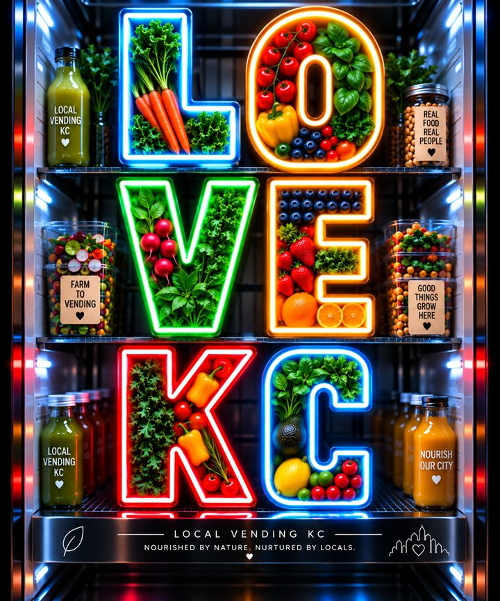

😕
The problem
Convenient food often costs us quality, freshness, local sourcing and variety. Traditional vending is built on nationally distributed packaged products, while local makers lack a way to reach customers beyond their own door.
The big picture
A Makers Market, a vegan kitchen and an AI micro‑market in one small space. Made local. Sold local. Available 24/7.
Convenient food often costs us quality, freshness, local sourcing and variety. Traditional vending is built on nationally distributed packaged products, while local makers lack a way to reach customers beyond their own door.
One compact space of about 750 sq ft that is a vegan kitchen, a local marketplace, a 24/7 store and a distribution hub. Local businesses reach shoppers without opening their own shop.
Shelves are split between our own products and the best of Kansas City.
A maker brings the product. We bring the shelf, the machine and the shoppers.
Open around the clock with card entry and AI‑powered checkout. No cashier needed.
Swipe a card to unlock the door.
Grab items from shelves and coolers.
Product recognition totals the purchase.
Cashless payment, then leave.
Behind the scenes: inventory tracking and alerts, sales reporting and remote monitoring.
Each 750‑sq‑ft hub makes about ten products really well and shares them across the network.
Food is made close to where it is sold, so it arrives fresher.
A problem at one kitchen does not stop the whole network.
Every new location adds both a shop and more production capacity.
Sold in our markets, our machines, third‑party placements and eventually grocery stores.
Wholesale or revenue‑share sales of local makers' goods.
Luxury apartments, hotels, airports and corporate properties.
Top sellers go to grocery, specialty markets, cafés, restaurants and institutions.
Heidi's family of more than five brands, made and co‑packed in one place.
A public milk bar: coolers of sandwiches, sides, fresh juices, fruit milks and herbal‑infused milks, plus soft serve.

The vending, wholesale and co‑packing arm: sauces, milks and waffles for machines and retailers.
[Short description of the remaining brands]
Each stage earns before the next one starts, so the risk stays small and growth comes from real sales.
Kitchen, autonomous retail, first products and local maker partners.
Apartments, hotels, offices and busy spots, guided by sales data.
New locations, each specializing in about ten products.
Best sellers move into grocery and other retail.
Every week: fresh‑baked organic bread, pizza, sandwiches, soft serve and all the toppings.
Local Vending KC was founded by single mothers, and plans to give 10% of taxable income to foundations that support single mothers and their children. Local businesses, local jobs, local products, local families.